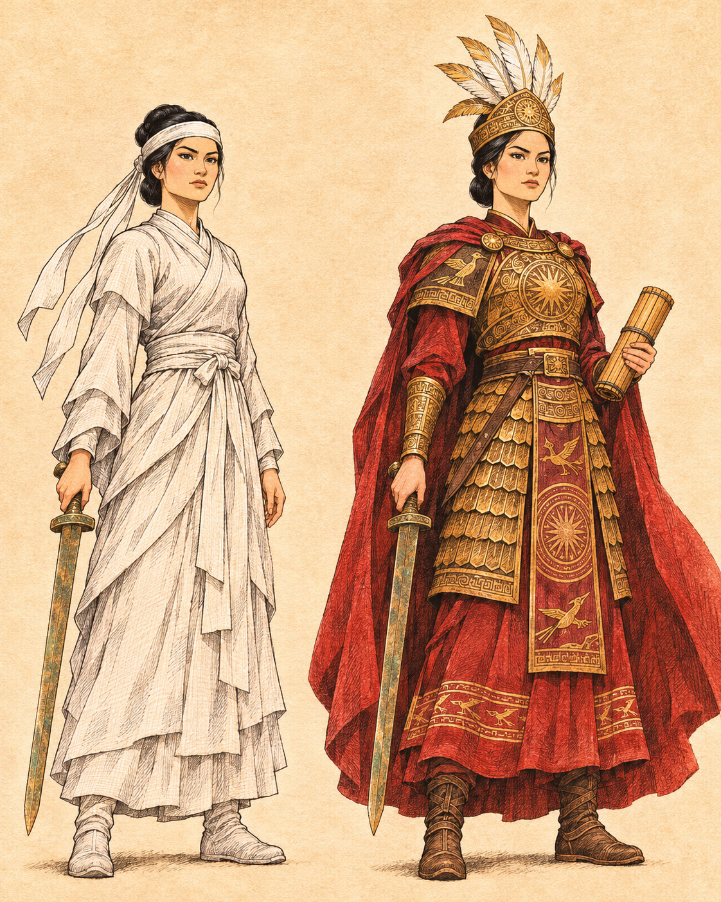
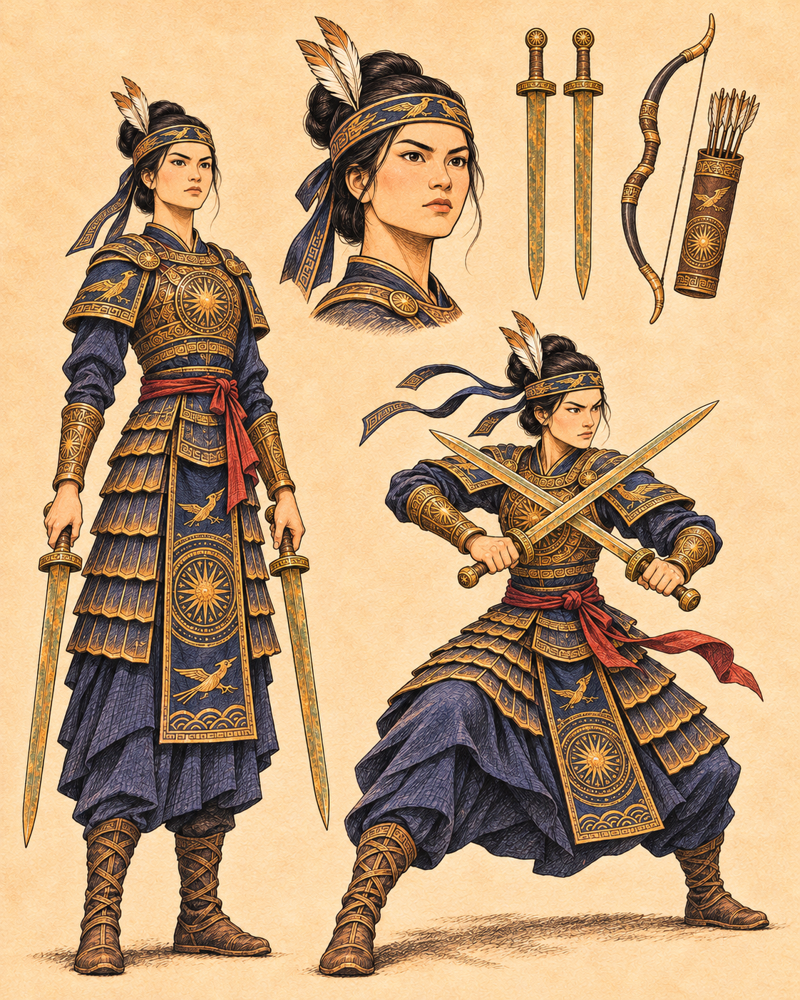
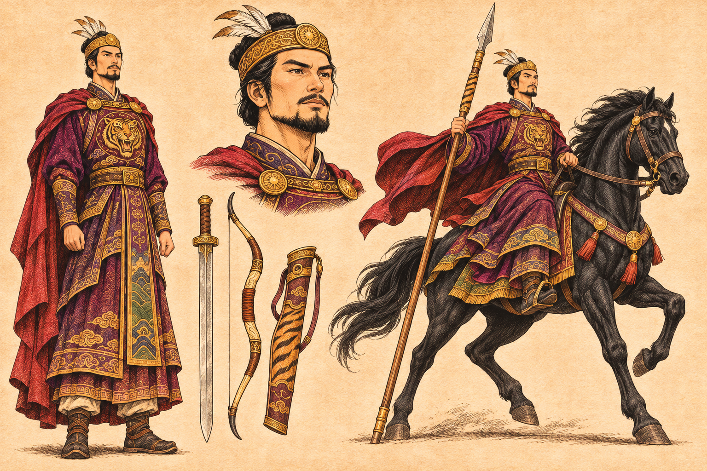
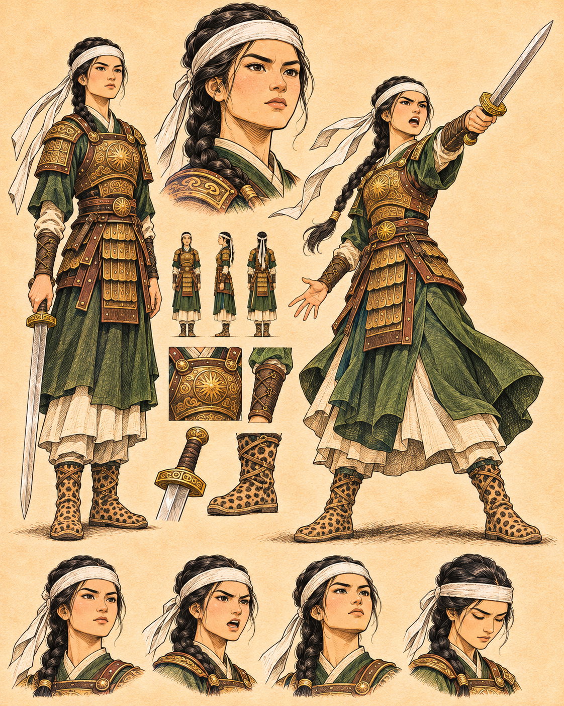
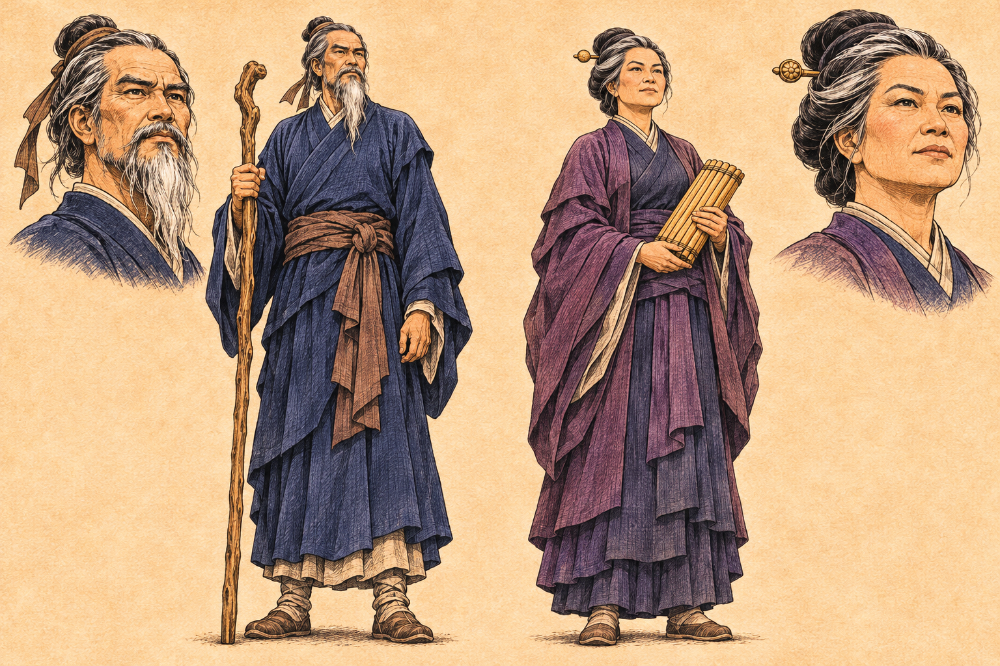
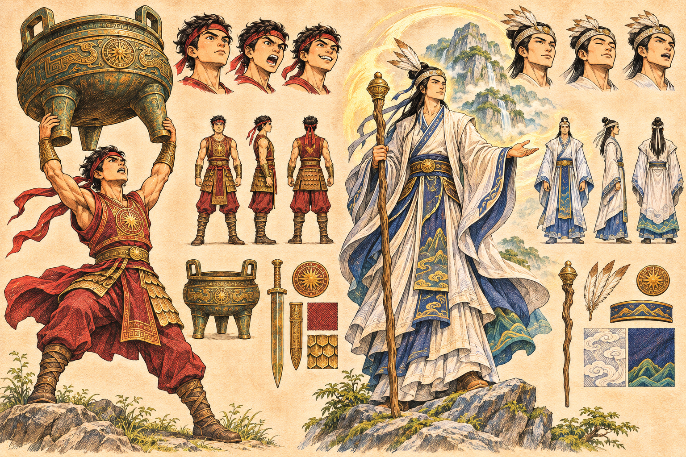

CHAR01 — Trưng Trắc
Trái tang bào, phải giáp chiến

CHAR02 — Trưng Nhị
Trái: đứng; phải: thủ kiếm; giữa: mặt

CHAR03 — Thi Sách
Trái: đứng; phải: hắc mã; giữa: mặt

CHAR04 — Thánh Thiên
Trái: đứng; phải: chỉ huy; giữa: mặt
CHAR05 — Đinh Lương — Phùng Thị Chính
Trái: NV05; phải: NV06; mặt phía trên cùng cột
CHAR06 — Nguyễn Huyền — Trưng Định
Trái: NV07; phải: NV08

CHAR07 — Đô Năng Tế — Cẩm Nương
Trái: NV09 nam có râu; phải: NV10 nữ
CHAR08 — Tam vị huyện lệnh
Trái NV11; giữa NV12; phải NV13

CHAR09 — Thánh Đóng — Tản Viên
Trái NV14; phải NV15